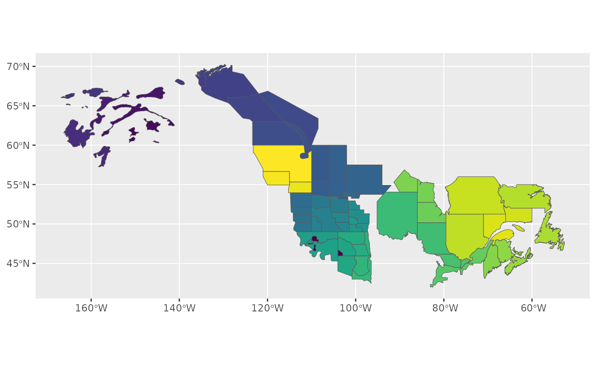
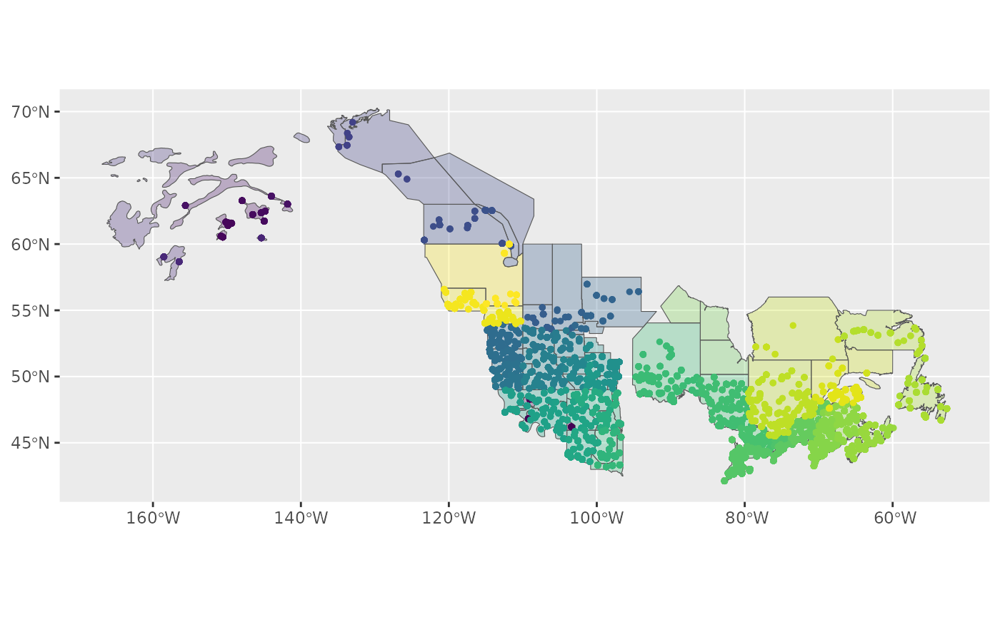
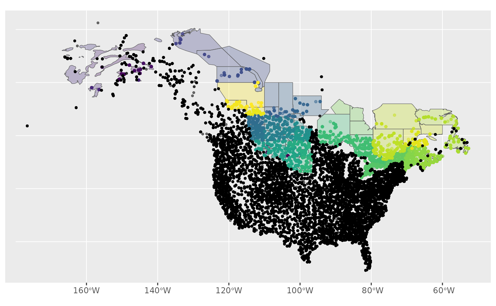
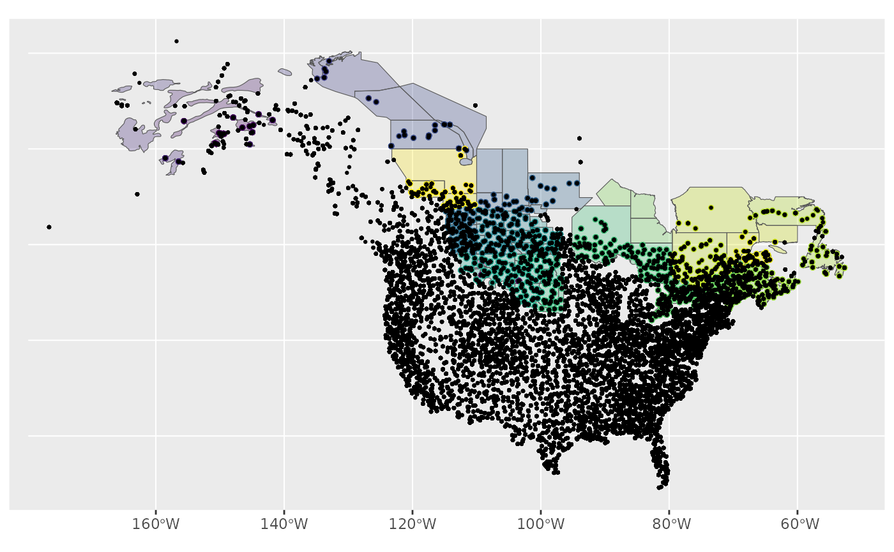
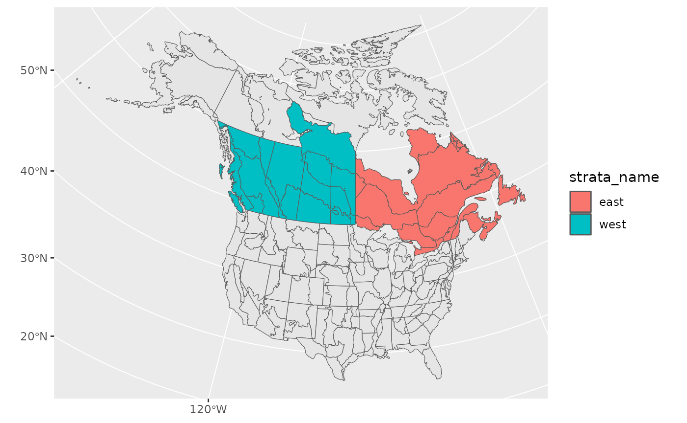
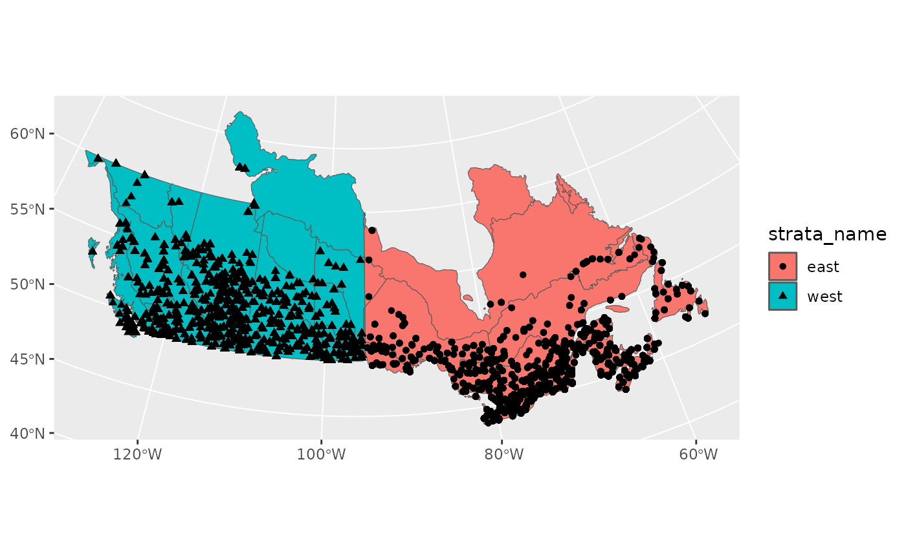

In this vignette we’ll explore the various ways you can stratify your data in preparation for running the models.
You can use existing, pre-defined strata, subset an existing strata, or create your own custom stratification, either using a completely new set of spatial data, or by modifying the spatial polygons of an existing strata.
Let’s get started!
First, we’ll load the packages we need.
library(bbsBayes2)
library(sf) # Spatial data manipulations
library(dplyr) # General data manipulations
library(ggplot2) # PlottingThen we’ll make sure we have the BBS data downloaded
have_bbs_data()
#> Expected BBS state data 2022: '/home/runner/.local/share/R/bbsBayes2/bbs_state_data_2022.rds'
#> [1] TRUEIf not, install with fetch_bbs_data()
Stratifying with existing categories
The existing stratifications are bbs_usgs, bbs_cws, bcr, latlong, prov_state.
You can take a look at how these stratify your data by looking at the
maps included in bbsBayes2 with load_map().
ggplot(data = load_map("bbs_cws"), aes(fill = strata_name)) +
geom_sf() +
scale_fill_viridis_d(guide = "none")
To stratify BBS data, you can use these existing stratifications by
specifying by = "name" in the stratify()
function.
s <- stratify(by = "bbs_usgs", species = "Canada Jay")
#> Using 'bbs_usgs' (standard) stratification
#> Loading BBS data...
#> Filtering to species Canada Jay (4840)
#> Stratifying data...
#> Renaming routes...Subsetting an existing stratification
But what if you want to use the BBS CWS stratification, but only really want to look at Canadian regions?
In this case you’ll subset the BBS CWS stratification and give
stratify() that data set in addition to the
specification.
In addition to maps, stratifications are available as data frames in
the bbs_strata object.
names(bbs_strata)
#> [1] "bbs_usgs" "bbs_cws" "bcr" "latlong" "prov_state"
bbs_strata[["bbs_cws"]]
#> # A tibble: 207 × 7
#> strata_name area_sq_km country country_code prov_state bcr bcr_by_country
#> * <chr> <dbl> <chr> <chr> <chr> <dbl> <chr>
#> 1 CA-AB-10 52565. Canada CA AB 10 Canada-BCR_10
#> 2 CA-AB-11 149352. Canada CA AB 11 Canada-BCR_11
#> 3 CA-AB-6 445135. Canada CA AB 6 Canada-BCR_6
#> 4 CA-AB-8 6987. Canada CA AB 8 Canada-BCR_8
#> 5 CA-BC-10 383006. Canada CA BC 10 Canada-BCR_10
#> 6 CA-BC-4 193180. Canada CA BC 4 Canada-BCR_4
#> 7 CA-BC-5 199820. Canada CA BC 5 Canada-BCR_5
#> 8 CA-BC-6 106917. Canada CA BC 6 Canada-BCR_6
#> 9 CA-BC-9 59939. Canada CA BC 9 Canada-BCR_9
#> 10 CA-BCR7-7 1743744. Canada CA BCR7 7 Canada-BCR_7
#> # … with 197 more rowsWe can now modify and use this data frame as we like.
my_cws <- filter(bbs_strata[["bbs_cws"]], country == "Canada")
s <- stratify(by = "bbs_cws", species = "Canada Jay", strata_custom = my_cws)
#> Using 'bbs_cws' (subset) stratification
#> Loading BBS data...
#> Filtering to species Canada Jay (4840)
#> Stratifying data...
#> Combining BCR 7 and NS and PEI...
#> Renaming routes...
#> Omitting 101,474/119,567 route-years that do not match a stratum.
#> To see omitted routes use `return_omitted = TRUE` (see ?stratify)Note that the stratification is now “bbs_cws” and “subset”
s[["meta_data"]]
#> $stratify_by
#> [1] "bbs_cws"
#>
#> $stratify_type
#> [1] "subset"
#>
#> $species
#> [1] "Canada Jay"We can see the strata included by looking at the
meta_strata
print(s[["meta_strata"]], n = Inf)
#> # A tibble: 30 × 7
#> strata_name area_sq_km country country_code prov_state bcr bcr_by_country
#> <chr> <dbl> <chr> <chr> <chr> <dbl> <chr>
#> 1 CA-AB-10 52565. Canada CA AB 10 Canada-BCR_10
#> 2 CA-AB-11 149352. Canada CA AB 11 Canada-BCR_11
#> 3 CA-AB-6 445135. Canada CA AB 6 Canada-BCR_6
#> 4 CA-BC-10 383006. Canada CA BC 10 Canada-BCR_10
#> 5 CA-BC-4 193180. Canada CA BC 4 Canada-BCR_4
#> 6 CA-BC-5 199820. Canada CA BC 5 Canada-BCR_5
#> 7 CA-BC-6 106917. Canada CA BC 6 Canada-BCR_6
#> 8 CA-BC-9 59939. Canada CA BC 9 Canada-BCR_9
#> 9 CA-BCR7-7 1743744. Canada CA BCR7 7 Canada-BCR_7
#> 10 CA-MB-11 70101. Canada CA MB 11 Canada-BCR_11
#> 11 CA-MB-12 15312. Canada CA MB 12 Canada-BCR_12
#> 12 CA-MB-6 127190. Canada CA MB 6 Canada-BCR_6
#> 13 CA-MB-8 234151. Canada CA MB 8 Canada-BCR_8
#> 14 CA-NB-14 72991. Canada CA NB 14 Canada-BCR_14
#> 15 CA-NL-8 157083. Canada CA NL 8 Canada-BCR_8
#> 16 CA-NSPE-14 61502. Canada CA NSPE 14 Canada-BCR_14
#> 17 CA-NT-3 394769. Canada CA NT 3 Canada-BCR_3
#> 18 CA-NT-6 509423. Canada CA NT 6 Canada-BCR_6
#> 19 CA-NU-3 1969549. Canada CA NU 3 Canada-BCR_3
#> 20 CA-ON-12 206181. Canada CA ON 12 Canada-BCR_12
#> 21 CA-ON-13 83859. Canada CA ON 13 Canada-BCR_13
#> 22 CA-ON-8 435545. Canada CA ON 8 Canada-BCR_8
#> 23 CA-QC-12 174314. Canada CA QC 12 Canada-BCR_12
#> 24 CA-QC-13 28409. Canada CA QC 13 Canada-BCR_13
#> 25 CA-QC-14 67711. Canada CA QC 14 Canada-BCR_14
#> 26 CA-QC-8 470310. Canada CA QC 8 Canada-BCR_8
#> 27 CA-SK-11 241315. Canada CA SK 11 Canada-BCR_11
#> 28 CA-SK-6 177763. Canada CA SK 6 Canada-BCR_6
#> 29 CA-SK-8 188615. Canada CA SK 8 Canada-BCR_8
#> 30 CA-YT-4 435349. Canada CA YT 4 Canada-BCR_4Custom stratification - New map
To define a completely different stratification, you’ll need to provide a spatial data object with polygons defining your strata.
In our example we’ll use WBPHS stratum boundaries for 2019. This is available from available from the US Fish and Wildlife Service Catalogue: https://ecos.fws.gov/ServCat/Reference/Profile/142628
You can either download it by hand, or with the following code.
z <- "WBPHS_stratum_boundaries_2019.zip"
download.file(url = "https://ecos.fws.gov/ServCat/DownloadFile/213149",
destfile = z)
unzip(z) # Unzip
unlink(z) # Remove the zipped fileTo use this file in bbsBayes2, we need to load it as an sf object using the sf package.
map <- read_sf("WBPHS_stratum_boundaries_2019.shp")
map
#> Simple feature collection with 81 features and 1 field
#> Geometry type: POLYGON
#> Dimension: XY
#> Bounding box: xmin: -166.8897 ymin: 41.95304 xmax: -52.61347 ymax: 70.26563
#> Geodetic CRS: WGS 84
#> # A tibble: 81 × 2
#> STRAT geometry
#> <int> <POLYGON [°]>
#> 1 10 ((-165.2478 65.9118, -165.4129 65.9136, -165.5941 65.92889, -165.7198 …
#> 2 10 ((-165.666 65.21061, -165.6339 65.226, -165.5973 65.22971, -165.534 65…
#> 3 11 ((-159.1616 66.1132, -159.2357 66.1137, -159.2907 66.1165, -159.3785 6…
#> 4 9 ((-161.8425 59.61546, -161.8578 59.61984, -161.8837 59.63493, -161.907…
#> 5 10 ((-162.0134 64.7124, -162.049 64.71309, -162.0833 64.71751, -162.1213 …
#> 6 10 ((-160.881 64.70971, -160.9209 64.7151, -160.9496 64.73389, -160.9629 …
#> 7 6 ((-158.4808 64.28549, -158.5828 64.2881, -158.6513 64.29482, -158.7074…
#> 8 5 ((-159.7113 61.94699, -159.7341 61.9489, -159.7628 61.95391, -159.8032…
#> 9 3 ((-153.8148 64.6944, -153.8857 64.6792, -153.9843 64.65071, -154.1057 …
#> 10 4 ((-144.2179 65.86969, -144.3817 65.87701, -144.4698 65.88491, -144.537…
#> # … with 71 more rows
ggplot(map, aes(fill = factor(STRAT))) +
geom_sf() +
scale_fill_viridis_d(guide = "none")
We see that it has one column that reflects the stratum names. First
we’ll rename this column to strata_name which is what
stratify() requires.
map <- rename(map, strata_name = STRAT)
map
#> Simple feature collection with 81 features and 1 field
#> Geometry type: POLYGON
#> Dimension: XY
#> Bounding box: xmin: -166.8897 ymin: 41.95304 xmax: -52.61347 ymax: 70.26563
#> Geodetic CRS: WGS 84
#> # A tibble: 81 × 2
#> strata_name geometry
#> <int> <POLYGON [°]>
#> 1 10 ((-165.2478 65.9118, -165.4129 65.9136, -165.5941 65.92889, -165…
#> 2 10 ((-165.666 65.21061, -165.6339 65.226, -165.5973 65.22971, -165.…
#> 3 11 ((-159.1616 66.1132, -159.2357 66.1137, -159.2907 66.1165, -159.…
#> 4 9 ((-161.8425 59.61546, -161.8578 59.61984, -161.8837 59.63493, -1…
#> 5 10 ((-162.0134 64.7124, -162.049 64.71309, -162.0833 64.71751, -162…
#> 6 10 ((-160.881 64.70971, -160.9209 64.7151, -160.9496 64.73389, -160…
#> 7 6 ((-158.4808 64.28549, -158.5828 64.2881, -158.6513 64.29482, -15…
#> 8 5 ((-159.7113 61.94699, -159.7341 61.9489, -159.7628 61.95391, -15…
#> 9 3 ((-153.8148 64.6944, -153.8857 64.6792, -153.9843 64.65071, -154…
#> 10 4 ((-144.2179 65.86969, -144.3817 65.87701, -144.4698 65.88491, -1…
#> # … with 71 more rowsNow we have the spatial data and relevant information to pass to
stratify().
When using a custom stratification, the by argument
becomes the name you want to apply. Let’s use something informative, but
short (although there’s no limit). We also need to give the function our
map.
s <- stratify(by = "WBPHS_2019", species = "Canada Jay", strata_custom = map)
#> Using 'wbphs_2019' (custom) stratification
#> Loading BBS data...
#> Filtering to species Canada Jay (4840)
#> Stratifying data...
#> Preparing custom strata (EPSG:4326; WGS 84)...
#> Summarizing strata...
#> Calculating area weights...
#> Joining routes to custom spatial data...
#> Renaming routes...
#> Omitting 100,155/119,567 route-years that do not match a stratum.
#> To see omitted routes use `return_omitted = TRUE` (see ?stratify)Note that strata names are automatically put into lower case for consistency.
We can take a quick look at the output, by looking at the meta data and routes contained therein.
s[["meta_data"]]
#> $stratify_by
#> [1] "wbphs_2019"
#>
#> $stratify_type
#> [1] "custom"
#>
#> $species
#> [1] "Canada Jay"
s[["routes_strata"]]
#> # A tibble: 19,412 × 33
#> strata_n…¹ count…² state…³ route route…⁴ active latit…⁵ longi…⁶ bcr route…⁷
#> <chr> <dbl> <dbl> <chr> <chr> <dbl> <dbl> <dbl> <dbl> <dbl>
#> 1 3 840 3 3-8 TOWER … 1 63.6 -144. 4 1
#> 2 3 840 3 3-8 TOWER … 1 63.6 -144. 4 1
#> 3 3 840 3 3-8 TOWER … 1 63.6 -144. 4 1
#> 4 3 840 3 3-8 TOWER … 1 63.6 -144. 4 1
#> 5 3 840 3 3-8 TOWER … 1 63.6 -144. 4 1
#> 6 3 840 3 3-8 TOWER … 1 63.6 -144. 4 1
#> 7 3 840 3 3-8 TOWER … 1 63.6 -144. 4 1
#> 8 3 840 3 3-8 TOWER … 1 63.6 -144. 4 1
#> 9 3 840 3 3-8 TOWER … 1 63.6 -144. 4 1
#> 10 3 840 3 3-8 TOWER … 1 63.6 -144. 4 1
#> # … with 19,402 more rows, 23 more variables: route_type_detail_id <dbl>,
#> # route_data_id <dbl>, rpid <dbl>, year <dbl>, month <dbl>, day <dbl>,
#> # obs_n <dbl>, total_spp <dbl>, start_temp <dbl>, end_temp <dbl>,
#> # temp_scale <chr>, start_wind <dbl>, end_wind <dbl>, start_sky <dbl>,
#> # end_sky <dbl>, start_time <dbl>, end_time <dbl>, assistant <dbl>,
#> # quality_current_id <dbl>, run_type <dbl>, state <chr>, st_abrev <chr>,
#> # country <chr>, and abbreviated variable names ¹strata_name, ²country_num, …To get a different look we can also plot this data on top of our map
using ggplot2. Note that we use factor() to ensure the
strata names are categorical.
r <- s[["routes_strata"]] %>%
st_as_sf(coords = c("longitude", "latitude"), crs = 4326)
ggplot() +
geom_sf(data = map, aes(fill = factor(strata_name)), alpha = 0.3) +
geom_sf(data = r, aes(colour = factor(strata_name)), size = 1) +
scale_fill_viridis_d(aesthetics = c("colour", "fill"), guide = "none")
Based on the message we received during stratification
(Omitting...) and this map, it looks as if our custom
stratification is excluding some BBS data.
We can re-run the stratification with
return_omitted = TRUE which will attach a data frame of
omitted strata to the output.
s <- stratify(by = "WBPHS_2019", species = "Canada Jay", strata_custom = map,
return_omitted = TRUE)
#> Using 'wbphs_2019' (custom) stratification
#> Loading BBS data...
#> Filtering to species Canada Jay (4840)
#> Stratifying data...
#> Preparing custom strata (EPSG:4326; WGS 84)...
#> Summarizing strata...
#> Calculating area weights...
#> Joining routes to custom spatial data...
#> Renaming routes...
#> Omitting 100,155/119,567 route-years that do not match a stratum.
#> Returning omitted routes.
s[["routes_omitted"]]
#> # A tibble: 100,155 × 11
#> year strata_name country state route route_…¹ latit…² longi…³ bcr obs_n
#> <dbl> <chr> <chr> <chr> <chr> <chr> <dbl> <dbl> <dbl> <dbl>
#> 1 1967 NA US ALABAMA 2-1 ST FLOR… 34.9 -87.6 27 1.14e6
#> 2 1969 NA US ALABAMA 2-1 ST FLOR… 34.9 -87.6 27 9.90e5
#> 3 1970 NA US ALABAMA 2-1 ST FLOR… 34.9 -87.6 27 9.90e5
#> 4 1971 NA US ALABAMA 2-1 ST FLOR… 34.9 -87.6 27 9.90e5
#> 5 1972 NA US ALABAMA 2-1 ST FLOR… 34.9 -87.6 27 9.90e5
#> 6 1973 NA US ALABAMA 2-1 ST FLOR… 34.9 -87.6 27 1.06e6
#> 7 1974 NA US ALABAMA 2-1 ST FLOR… 34.9 -87.6 27 1.06e6
#> 8 1975 NA US ALABAMA 2-1 ST FLOR… 34.9 -87.6 27 1.06e6
#> 9 1976 NA US ALABAMA 2-1 ST FLOR… 34.9 -87.6 27 1.06e6
#> 10 1977 NA US ALABAMA 2-1 ST FLOR… 34.9 -87.6 27 1.06e6
#> # … with 100,145 more rows, 1 more variable: total_spp <dbl>, and abbreviated
#> # variable names ¹route_name, ²latitude, ³longitudeLet’s take a look at this visually.
omitted <- st_as_sf(s[["routes_omitted"]], coords = c("longitude", "latitude"),
crs= 4326)
ggplot() +
geom_sf(data = map, aes(fill = factor(strata_name)), alpha = 0.3) +
geom_sf(data = r, aes(colour = factor(strata_name)), size = 1, alpha = 0.5) +
geom_sf(data = omitted, size = 0.75, alpha = 0.5) +
scale_fill_viridis_d(aesthetics = c("colour", "fill"), guide = "none") 
We could also look at this visually by comparing the stratified data to the raw BBS data.
First we load the raw routes data, then we’ll add it to our plot.
This plot may take a little while to run!
bbs_routes <- load_bbs_data()[["routes"]] %>%
st_as_sf(coords = c("longitude", "latitude"), crs= 4326)
ggplot() +
geom_sf(data = map, aes(fill = factor(strata_name)), alpha = 0.3) +
geom_sf(data = r, aes(colour = factor(strata_name)), size = 1) +
geom_sf(data = bbs_routes, size = 0.5) +
scale_fill_viridis_d(aesthetics = c("colour", "fill"), guide = "none") 
So either way, we can clearly see, spatially, which points have been omitted from our data.
Custom stratification - Modifying existing BBS maps
Stratify by custom stratification, using sf map object. For example, let’s look at an east/west divide of southern Canada with BBS CWS strata.
First we’ll start with the CWS BBS data
map <- load_map("bbs_cws")We’ll modify this by first looking only at provinces (omitting the northern territories), transforming to the GPS CRS (4326), and ensuring the resulting polygons are valid.
new_map <- map %>%
filter(country_code == "CA", !prov_state %in% c("NT", "NU", "YT")) %>%
st_transform(4326)%>%
st_make_valid()Now we can crop this map to make a western and an eastern portion, defined by longitude and latitude (which is why we first transformed to the GPS CRS).
west <- st_crop(new_map, xmin = -140, ymin = 42, xmax = -95, ymax = 68) %>%
mutate(strata_name = "west")
#> Warning: attribute variables are assumed to be spatially constant throughout
#> all geometries
east <- st_crop(new_map, xmin = -95, ymin = 42, xmax = -52, ymax = 68) %>%
mutate(strata_name = "east")
#> Warning: attribute variables are assumed to be spatially constant throughout
#> all geometriesNow we’ll bind these together and transform back to the original CRS
new_strata <- bind_rows(west, east) %>%
st_transform(st_crs(map))
ggplot() +
geom_sf(data = map) +
geom_sf(data = new_strata, aes(fill = strata_name), alpha = 1)
Looks good! Let’s use it in our stratification and take a look at the points afterwards to ensure they’ve been categorized appropriately.
s <- stratify(by = "canada_ew", species = "Canada Jay",
strata_custom = new_strata)
#> Using 'canada_ew' (custom) stratification
#> Loading BBS data...
#> Filtering to species Canada Jay (4840)
#> Stratifying data...
#> Preparing custom strata (ESRI:102008; North_America_Albers_Equal_Area_Conic)...
#> Summarizing strata...
#> Calculating area weights...
#> Joining routes to custom spatial data...
#> Renaming routes...
#> Omitting 103,468/119,567 route-years that do not match a stratum.
#> To see omitted routes use `return_omitted = TRUE` (see ?stratify)
s$meta_data
#> $stratify_by
#> [1] "canada_ew"
#>
#> $stratify_type
#> [1] "custom"
#>
#> $species
#> [1] "Canada Jay"
routes <- s$routes_strata %>%
st_as_sf(coords = c("longitude", "latitude"), crs = 4326)
ggplot() +
geom_sf(data = new_strata, aes(fill = strata_name), alpha = 1) +
geom_sf(data = routes, aes(shape = strata_name))
This outlies the various ways in which you can stratify your data. For a more indepth look at how to use custom stratifications throughout the entire workflow, see the Custom Stratifications article.